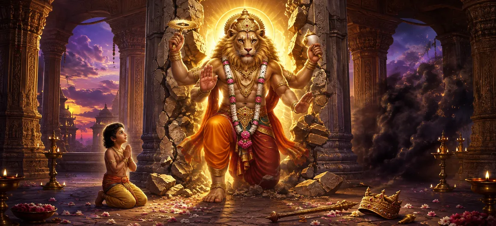

नरसिम्हा की कथा
शतरुद्र संहिता का अध्याय 10 नरसिम्हा की पवित्र कथा की ओर मुड़ता है, भगवान की असाधारण दिव्य अभिव्यक्ति एक ऐसे रूप में है जो न तो पूरी तरह से मानव है और न ही पूरी तरह से पशु है। जब भी धर्म और भक्ति को सुरक्षा की आवश्यकता होती है, नरसिम्हा की उपस्थिति प्रकट होने के लिए दिव्य शक्ति की रहस्यमय स्वतंत्रता का प्रतिनिधित्व करती है।
यह कथा अत्याचारी हिरण्यकशिपु और उसके समर्पित पुत्र प्रह्लाद के बीच संघर्ष पर केंद्रित है। जबकि हिरण्यकशिपु पूर्ण शक्ति चाहता है और खुद को मृत्यु से सुरक्षित मानता है, प्रह्लाद ईश्वर के प्रति अपनी भक्ति में अटल रहता है।
नरसिम्हा के उद्भव से अहंकार और सांसारिक शक्ति की सीमा का पता चलता है। यह पवित्र परंपरा की महान भक्ति शिक्षाओं में से एक को भी स्थापित करता है: भय, उत्पीड़न और स्पष्ट असंभवता से घिरे होने पर भी सच्ची भक्ति सुरक्षित रहती है।
अध्याय 10 की मुख्य बातें
नरसिम्हा प्रकटीकरण
दैवीय शक्ति की असाधारण आधे मनुष्य और आधे शेर की अभिव्यक्ति।
प्रह्लाद की भक्ति
अटूट भक्ति जो उत्पीड़न और खतरे के बावजूद दृढ़ रहती है।
हिरण्यकशिपु का अभिमान
सांसारिक अहंकार का उदय और व्यक्तिगत शक्ति को ईश्वर से ऊपर रखने की इच्छा।
दैवीय सुरक्षा
यह कथा सच्ची भक्ति के प्रति ईश्वर की सुरक्षात्मक शक्ति को प्रकट करती है।
अत्याचार का नाश
जब उत्पीड़न और अहंकार से धर्म को खतरा होता है तो दैवीय शक्ति हस्तक्षेप करती है।
धर्म की विजय
कहानी इस बात की पुष्टि करती है कि धर्म अंततः विनाशकारी घमंड पर विजय पाती है।
इस अध्याय में मुख्य विषय
नरसिम्हा कथा की सेटिंग
नरसिम्हा की कथा भक्ति और अत्याचार के बीच संघर्ष से उभरती है। शक्तिशाली शासक हिरण्यकशिपु वर्चस्व की इच्छा से भस्म हो जाता है, जबकि उसके पुत्र प्रह्लाद में ईश्वर के प्रति अटूट भक्ति विकसित हो जाती है।
पिता और पुत्र के बीच विरोधाभास कहानी के केंद्रीय आध्यात्मिक तनाव को स्थापित करता है। एक स्वयं को सर्वोच्च प्राधिकारी बनाना चाहता है, जबकि दूसरा ईश्वर को अंतिम वास्तविकता के रूप में पहचानता है।
हिरण्यकशिपु का उदय
हिरण्यकशिपु शक्ति के विनाशकारी पक्ष का प्रतिनिधित्व करता है जब वह विनम्रता और ईश्वर के प्रति श्रद्धा से अलग हो जाता है। उसकी महत्वाकांक्षा केवल शासन करने की नहीं है, बल्कि खुद को सार्वभौमिक अधीनता की वस्तु के रूप में स्थापित करने की है।
अपनी सुरक्षा में उसका विश्वास अहंकार का और भी गहरा रूप पैदा करता है। कथा से पता चलता है कि सांसारिक शक्ति, चाहे कितनी भी प्रभावशाली क्यों न हो, किसी व्यक्ति को दैवीय कानून की पहुंच से परे नहीं रख सकती।
प्रह्लाद की अटूट भक्ति
प्रह्लाद अपने पिता से बिल्कुल विपरीत है। अपने परिवेश और उस पर डाले गए दबाव के बावजूद, उसकी भक्ति स्थिर बनी हुई है। वह इस विचार को स्वीकार नहीं करता कि सांसारिक सत्ता ईश्वरीय सत्ता का स्थान ले सकती है।
उनकी भक्ति को केवल बाह्य कर्मकाण्ड के रूप में प्रस्तुत नहीं किया जाता। यह एक आंतरिक निश्चितता बन जाती है जो परिस्थितियाँ प्रतिकूल होने पर भी अटल रहती है।
इसलिए प्रह्लाद विश्वास का एक स्थायी प्रतीक बन जाता है जो आराम, सुरक्षा या सांसारिक स्वीकृति पर निर्भर नहीं करता है।
प्रह्लाद की परीक्षा
प्रह्लाद की भक्ति को उन लोगों द्वारा बार-बार चुनौती दी जाती है जो उसे अपने विश्वास से जबरन हटाना चाहते हैं। फिर भी प्रत्येक परीक्षण एक ही सत्य को उजागर करता है: ईमानदारी में निहित भक्ति को बाहरी ताकत द्वारा आसानी से नष्ट नहीं किया जा सकता है।
उनकी दृढ़ता पीड़ा को विश्वास के प्रदर्शन में बदल देती है। धमकी मिलने पर भक्ति छोड़ने के बजाय, प्रहलाद ईश्वर की याद में और भी दृढ़ता से स्थापित हो जाता है।
दिव्य उपस्थिति की चुनौती
कथा अपने निर्णायक क्षण तक पहुँचती है जब ईश्वर की उपस्थिति ही टकराव का विषय बन जाती है। हिरण्यकशिपु ने प्रह्लाद की निश्चितता को चुनौती दी और ईश्वरीय उपस्थिति का प्रमाण मांगा।
फिर पवित्र कथा नरसिम्हा की आश्चर्यजनक अभिव्यक्ति प्रस्तुत करती है। ईश्वर ऐसे रूप में प्रकट होता है जो उन सामान्य श्रेणियों से परे है जिनके माध्यम से मनुष्य वास्तविकता को परिभाषित करने का प्रयास करता है।
नरसिम्हा की अभिव्यक्ति
नरसिम्हा मानवीय और लियोनीन विशेषताओं को मिलाकर एक दिव्य रूप में प्रकट होते हैं। यह असाधारण अभिव्यक्ति दर्शाती है कि दैवीय शक्ति को उन लोगों की अपेक्षाओं तक सीमित नहीं किया जा सकता है जो इसकी गणना या नियंत्रण करने का प्रयास करते हैं।
नरसिम्हा की उपस्थिति एक साथ उग्र और सुरक्षात्मक है। भयानक रूप भक्त की रक्षा करते हुए अत्याचार के विनाश की ओर निर्देशित है।
इसलिए यह अभिव्यक्ति एक गहरा संदेश देती है: दैवीय हस्तक्षेप ऐसे रूपों में प्रकट हो सकता है जो सामान्य मानवीय अपेक्षा से परे हैं।
हिरण्यकशिपु का विनाश
हिरण्यकशिपु का विनाश उस अत्याचार के पतन का प्रतीक है जिसने खुद को दैवीय व्यवस्था से ऊपर रखने का प्रयास किया है। एक बार जब उसका अहंकार धर्म के लिए सीधी चुनौती बन जाता है तो उसकी संचित शक्ति उसकी रक्षा नहीं कर सकती।
यह आयोजन इस बात पर जोर देता है कि विनम्रता के बिना शक्ति अंततः आत्म-विनाशकारी बन जाती है। कथा एक अत्याचारी शासक की महत्वाकांक्षाओं से ऊपर भक्ति और धर्म की सुरक्षा को महत्व देती है।
प्रह्लाद की सुरक्षा और आशीर्वाद
अत्याचारी के विनाश के साथ, प्रह्लाद की दृढ़ भक्ति की पुष्टि हुई। उनकी कहानी दर्शाती है कि सच्ची भक्ति बाहरी परिस्थितियों पर निर्भर नहीं होती।
प्रह्लाद की सुरक्षा कथा के सबसे महत्वपूर्ण भक्ति आयामों में से एक है। जब सांसारिक परिस्थितियाँ पूरी तरह से प्रतिकूल दिखाई देती हैं तब भी ईश्वर सच्चे हृदय पर प्रतिक्रिया करते हैं।
उनका उदाहरण भक्तों को विश्वास पैदा करने के लिए प्रोत्साहित करता है जो अनिश्चितता, पीड़ा और विरोध के दौरान भी स्थिर रहता है।
नरसिम्हा की आध्यात्मिक शिक्षा
नरसिम्हा की कथा सिखाती है कि भारी विरोध का सामना करने पर भी भक्ति शक्तिशाली बनी रह सकती है। प्रह्लाद का विश्वास परिस्थितियों पर निर्भर नहीं करता है, और यह उसकी भक्ति को आध्यात्मिक रूप से स्थायी बनाता है।
कहानी व्यक्तिगत शक्ति को अंतिम अधिकार के साथ पहचानने के प्रति भी चेतावनी देती है। हिरण्यकशिपु के पतन से अभिमान, वर्चस्व और इस विश्वास की सीमाएं उजागर होती हैं कि सांसारिक ताकत दैवीय व्यवस्था पर विजय प्राप्त कर सकती है।
इसलिए नरसिम्हा दैवीय सुरक्षा, साहस, धार्मिक हस्तक्षेप और विनाशकारी घमंड पर सच्ची भक्ति की जीत का प्रतीक बन जाता है।
शरभ अवतार में परिवर्तन
नरसिम्हा की कथा पवित्र अनुक्रम को एक और असाधारण अभिव्यक्ति की ओर ले जाती है। नरसिम्हा से जुड़ी उग्र ऊर्जा अगले अध्याय की पृष्ठभूमि बन जाती है, जो शरभ अवतार की प्रस्तावना का परिचय देती है।
नरसिम्हा से शरभ की ओर आंदोलन असाधारण दिव्य रूपों और उग्र अभिव्यक्तियों, ब्रह्मांडीय व्यवस्था, सुरक्षा और आध्यात्मिक उद्देश्य के बीच संबंधों की खोज जारी रखता है।
अध्याय 10 की मुख्य शिक्षाएँ
अटूट भक्ति
प्रह्लाद दर्शाते हैं कि सच्ची भक्ति उत्पीड़न के सामने भी दृढ़ रह सकती है।
दिव्य अभिव्यक्ति
नरसिम्हा दर्शाते हैं कि ईश्वर को सामान्य अपेक्षाओं तक सीमित नहीं किया जा सकता।
अभिमान की सीमा
सांसारिक शक्ति किसी व्यक्ति को ईश्वरीय व्यवस्था से ऊपर नहीं रख सकती।
दैवीय सुरक्षा
यह कथा सच्चे भक्तों के प्रति ईश्वर की सुरक्षात्मक शक्ति की पुष्टि करती है।
धर्म की विजय
अत्याचार और विनाशकारी अहंकार स्थायी रूप से धर्म पर विजय नहीं पा सकते।
भय से परे आस्था
प्रह्लाद का उदाहरण उस विश्वास को प्रोत्साहित करता है जो विषम परिस्थितियों में भी स्थिर रहता है।
आध्यात्मिक चिंतन
नरसिम्हा की कथा हमें सांसारिक शक्ति और आध्यात्मिक शक्ति के बीच अंतर पर विचार करने के लिए आमंत्रित करती है। हिरण्यकशिपु के पास अधिकार, धन और बल है, फिर भी ये उसे अंतिम सुरक्षा नहीं दे सकते। प्रह्लाद के पास इनमें से कोई भी सांसारिक लाभ नहीं है, लेकिन उसकी भक्ति उसे आंतरिक स्थिरता देती है जिसे आसानी से नष्ट नहीं किया जा सकता है। नरसिम्हा की अभिव्यक्ति से पता चलता है कि दैवीय सुरक्षा हमेशा मानवीय अपेक्षा के अनुसार प्रकट नहीं होती है। रूप ही सिखाता है कि परमात्मा सीमा से परे रहता है। भक्त के लिए, केंद्रीय पाठ सरल है: भक्ति में ईमानदार रहें, भय को विश्वास को नष्ट न करने दें, और याद रखें कि अहंकार और उत्पीड़न स्थायी रूप से धर्म पर विजय नहीं पा सकते हैं।
अध्याय 10 का संदेश जीना
प्रह्लाद का उदाहरण हमें अखंडता बनाए रखने के लिए प्रोत्साहित करता है जब परिस्थितियाँ हमें अपने मूल्यों को त्यागने के लिए दबाव डालती हैं। सच्ची भक्ति की परीक्षा न केवल शांतिपूर्ण समय में होती है, बल्कि भय और विरोध के समय भी होती है।
कहानी विनम्रता भी सिखाती है. व्यक्तिगत सफलता, अधिकार, ज्ञान, या प्रभाव कभी भी यह विश्वास करने का कारण नहीं बनना चाहिए कि हम उच्च नैतिक और आध्यात्मिक व्यवस्था से स्वतंत्र हैं।
अंत में, नरसिम्हा हमें साहस पैदा करने की याद दिलाते हैं। जब धर्म को सुरक्षा की आवश्यकता होती है, तो डर को हमें सच्चाई के लिए दृढ़ता से खड़े होने से नहीं रोकना चाहिए।
प्रमुख आध्यात्मिक अवधारणाएँ
प्रह्लाद की सुरक्षा और हिरण्यकशिपु के विनाश से जुड़ी असाधारण दिव्य आधे मनुष्य और आधे शेर की अभिव्यक्ति।
वह समर्पित बच्चा जिसकी अटूट आस्था नरसिम्हा कथा का केंद्र बन जाती है।
वह शक्तिशाली शासक जिसका अभिमान और अत्याचार प्रह्लाद की भक्ति का केंद्रीय विरोध बन गया।
प्रह्लाद की ईश्वर के प्रति अटूट स्मृति द्वारा प्रदर्शित ईमानदार आध्यात्मिक प्रतिबद्धता।
सच्ची भक्ति और धर्म के प्रति दैवीय शक्ति की सुरक्षात्मक प्रतिक्रिया।
धर्म और नैतिक व्यवस्था का सिद्धांत जो अंततः विनाशकारी अत्याचार पर विजय प्राप्त करता है।
अध्याय सारांश
नरसिम्हा की कथा हिरण्यकशिपु के सांसारिक अहंकार और प्रह्लाद की अटूट भक्ति के बीच शक्तिशाली विरोधाभास प्रस्तुत करती है। हिरण्यकशिपु सर्वोच्चता चाहता है और ईश्वर के प्रति भक्ति को दबाने का प्रयास करता है, जबकि प्रह्लाद बार-बार उत्पीड़न के बावजूद अपने विश्वास पर दृढ़ रहता है। संघर्ष अपने निर्णायक बिंदु पर पहुँच जाता है जब भगवान नरसिम्हा, असाधारण आधे पुरुष और आधे शेर के रूप में प्रकट होते हैं। नरसिम्हा अत्याचारी को नष्ट कर देते हैं और समर्पित प्रह्लाद की रक्षा करते हैं, यह प्रदर्शित करते हुए कि दैवीय शक्ति को सामान्य अपेक्षाओं तक सीमित नहीं किया जा सकता है। कथा भक्ति, साहस, विनम्रता, दैवीय सुरक्षा और विनाशकारी अहंकार पर धर्म की अंतिम विजय सिखाती है। फिर पवित्र क्रम शरभ अवतार की प्रस्तावना की ओर बढ़ता है।
अक्सर पूछे जाने वाले प्रश्न
①अध्याय 10 का मुख्य विषय क्या है?
अध्याय 10 हिरण्यकशिपु और प्रह्लाद के बीच संघर्ष, नरसिम्हा की अभिव्यक्ति और भक्ति और धर्म की सुरक्षा पर ध्यान केंद्रित करते हुए नरसिम्हा की कथा प्रस्तुत करता है।
②नरसिम्हा कौन है?
नरसिम्हा भगवान विष्णु का दिव्य आधा पुरुष और आधा शेर का स्वरूप है, जो प्रह्लाद की रक्षा करने और हिरण्यकशिपु को नष्ट करने के लिए प्रकट हुए थे।
③ नरसिम्हा क्यों प्रकट हुए?
प्रह्लाद की रक्षा करने, हिरण्यकशिपु के अत्याचार पर काबू पाने और यह प्रदर्शित करने के लिए कि दैवीय शक्ति सांसारिक गणनाओं द्वारा लगाई गई सीमाओं को पार कर सकती है, नरसिम्हा प्रकट हुए।
④ प्रह्लाद किसका प्रतिनिधित्व करता है?
प्रह्लाद उत्पीड़न के सामने अटूट भक्ति, विश्वास, साहस और आध्यात्मिक अखंडता का प्रतिनिधित्व करता है।
⑤ नरसिम्हा कथा का मुख्य आध्यात्मिक पाठ क्या है?
कथा सिखाती है कि सच्ची भक्ति बड़ी प्रतिकूलता का सामना कर सकती है, जबकि अहंकार और अत्याचार स्थायी रूप से ईश्वरीय व्यवस्था पर विजय नहीं पा सकते।
⑥ नरसिम्हा की कथा के बाद क्या आता है?
अगला अध्याय शरभ अवतार की प्रस्तावना है।
"जहाँ भक्ति दृढ़ रहती है, भय अंतिम शब्द नहीं बन सकता। ईश्वर धर्म की रक्षा के लिए आवश्यक रूप में प्रकट होते हैं।"
शतरुद्र संहिता के माध्यम से जारी रखें
अध्याय 10 नरसिम्हा की पवित्र कथा, प्रह्लाद की दृढ़ भक्ति और अत्याचार पर दैवीय सुरक्षा की विजय प्रस्तुत करता है। शरभ अवतार की प्रस्तावना में प्रवेश करने के लिए अगले अध्याय को जारी रखें।